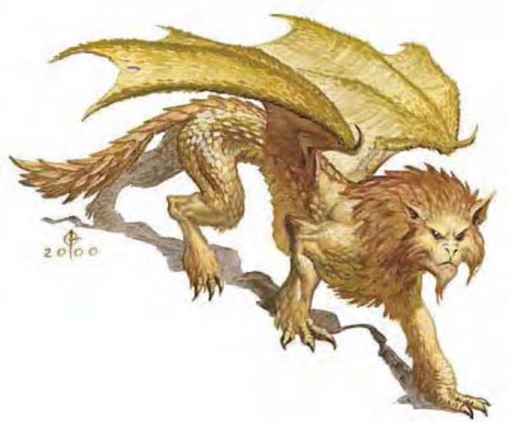

| 资料栏位 | 狮龙 (Dragonne) 大型魔法兽 |
| 生命骰 | 9d10+27 (76HP) |
| 先攻 | +6 |
| 速度 | 40英尺 (8格)、飞行30英尺 (不良) |
| 防御等级 | 18 (-1体型、+2敏捷、+7天生)、接触11、措手不及16 |
| 基本攻击/擒抱 | +9 / +17 |
| 攻击 | 啮咬+12近战 (2d6+4) |
| 全力攻击 | 啮咬+12近战 (2d6+4) 及 2爪抓+7近战 (2d4+2) |
| 占据/触及 | 10英尺 / 5英尺 |
| 特殊攻击 | 猛扑、怒吼 |
| 特殊能力 | 黑暗视觉60英尺、昏暗视觉、灵敏嗅觉 |
| 豁免 | 强韧+9、反射+8、意志+4 |
| 属性 | 力量19、敏捷15、体质17、智力6、感知12、魅力12 |
| 技能 | 聆听+11、侦察+11 |
| 专长 | 盲战、战斗反射、精通先攻、追踪 |
| 环境 | 温带沙漠 |
| 组织 | 单独、成双或兽群 (5-10) |
| 挑战级数 | 7 |
| 宝藏 | 双倍标准 |
| 阵营 | 通常绝对中立 |
| 进化 | 10-12HD (大型)；13-27HD (超大型) |
| 等级修正值 | +4 (部属) |
这种生物一半像龙一半像狮，肩上有一对黄铜色的小翅膀，全身也覆满同样颜色的鳞片，鬃毛粗糙而浓密。
兼有黄铜龙和狮两种生物某些最危险的本领，让狮龙成为相当强悍而致命的猎食者。
虽然在一般传言中，狮龙会残忍地吞噬无助的过往旅客，然而这些都是无稽之谈。事实上，他们并不会主动攻击陌生人，只有在巢穴或领地遭到攻击时才会出手反击。所以，若旅行者不小心闯进狮龙巢穴，或是殖民者试图在其领地上扎营时，才会遭受狮龙的猛烈攻击。只是路过而不会对巢穴造成威胁者，狮龙通常不予理会。
狮龙偏好猎食家畜，如：山羊。因为比起人形生物来说，这些生物比较不会还击。只有缺乏猎物时，狮龙才会对人形生物下手。
狮龙拥有巨大的爪子和牙齿，眼睛也不小，颜色和鳞片一样。狮龙长约12英尺，体重700磅。狮龙通晓龙语。
战斗狮龙的翅膀只能支撑短距离飞行，每次飞行时间10到30分钟。然而在战斗中他们会擅用这项优点。如果敌人试图包围或冲刺，狮龙会直接起飞，换个更适于防守的位置。
猛扑 (特异)：如果狮龙向对手冲刺，就算已经做出移动动作，仍可进行全力攻击。
怒吼 (超自然)：每1d4轮，狮龙可以发出一次震耳怒吼。除了狮龙之外，身边120英尺内的所有生物都必须通过意志检定 (DC=15)，否则会陷入疲乏。若生物处于狮龙身边30英尺内，而且检定失败，则会陷入力竭。豁免检定DC的调整值与魅力调整值相同。
技能：狮龙在进行“聆听”和“侦察”检定时具有+4种族加值。
负重能力：轻度负荷为348磅、中度负荷349-699磅、重度负荷700-1050磅。